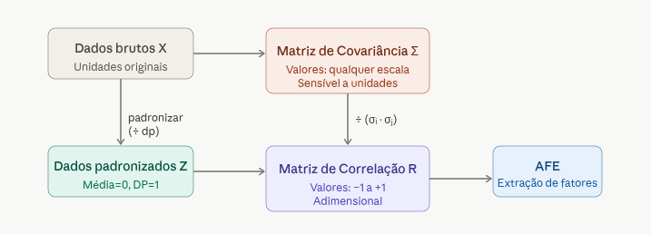
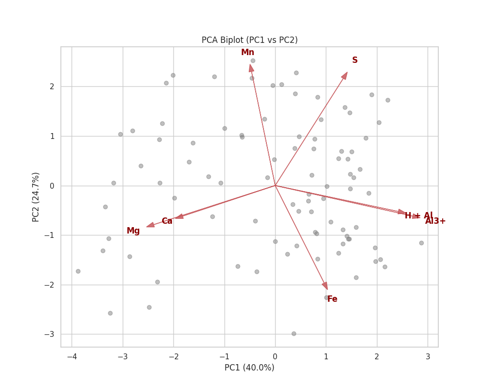
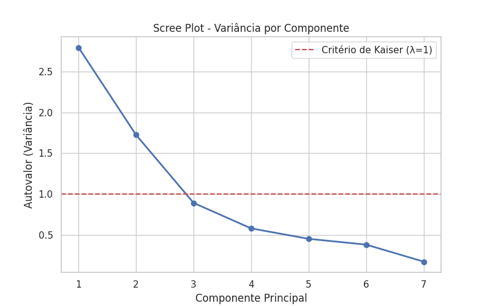

Análise Fatorial Exploratória (EFA - Exploratory Factorial Analysis)
Table of Contents
- 1. Introdução
- 2. Passo 1: Carregamento e Preparação dos Dados
- 3. Passo 2: Matriz de Correlação (R)
- 4. Passo 3: Decomposição em Autovalores e Autovetores
- 5. Passo 4: Interpretação da PCA e Visualização (antes de entrar no efa)
- 6. Transição: Da PCA para a Análise Fatorial
- 7. Passo 4: Matriz de Cargas Fatoriais (A)
- 8. Passo 5: Interpretação Inicial (Sem Rotação)
- 9. Passo 6: Rotação de Fatores (Varimax)
- 10. Conclusão
1. Introdução
Este documento sao anotacoes de estudo sobre Análise Fatorial Exploratória (AFE)
Detalhada dos dados de química do solo contidos no arquivo quimica_do_solo.xlsx.
O objetivo é realizar a mesma análise que o nosso professor fez nas aulas, utilizando algebra matricial pra entender os passos e o mecanismo da técnica e encontrar os mesmos resultados que o professor encontrou usando o statistica.
A análise segue os passos matemáticos clássicos utilizando álgebra matricial e a biblioteca SymPy para representação simbólica.
Seguindo a orientacao do professor, sempre que oportuno vou fazer analises para melhorar a compreensao do que esta sendo apresentado.
2. Passo 1: Carregamento e Preparação dos Dados
Os dados consistem em 90 amostras de solo com 7 variáveis quantitativas.
As variáveis analisadas são:
- Ca: Cálcio
- Mg: Magnésio
- H + Al: Acidez potencial
- Al3+: Alumínio trocável
- S: Soma de bases (ou enxofre, dependendo do contexto, aqui tratado como S)
- Fe: Ferro
- Mn: Manganês
2.1. Padronização das variaveis
from sympy import symbols, Matrix, latex x, mu, sigma = symbols('x mu sigma') z = (x - mu) / sigma print(f"Fórmula de Padronização: {latex(z)}")
A fórmula matemática é: \[ Z = \frac{X - \mu}{\sigma} \]
2.2. Script para Padronização dos Dados
O código abaixo realiza a leitura dos dados originais, aplica a padronização Z-score e exporta o resultado para um arquivo CSV. Este script pode ser extraído para um arquivo Python independente.
import pandas as pd import os # Determina o diretório onde o script está localizado script_dir = os.path.dirname(os.path.abspath(__file__)) if '__file__' in locals() else os.getcwd() # Caminhos dos arquivos baseados na localização do script input_file = os.path.join(script_dir, '../../quimica_do_solo.xlsx') output_file = os.path.join(script_dir, 'dados_padronizados.csv') # Normaliza os caminhos para evitar problemas com ../ input_file = os.path.normpath(input_file) output_file = os.path.normpath(output_file) if not os.path.exists(input_file): print(f"Erro: Arquivo {input_file} não encontrado.") else: # Carregamento dos dados cols = ['Ca', 'Mg', 'H + Al', 'Al3+', 'S', 'Fe', 'Mn'] df = pd.read_excel(input_file) X = df[cols] # Cálculo da padronização (Z-score) df_std = (X - X.mean()) / X.std() # Salvar em CSV df_std.to_csv(output_file, index=False) print(f"Dados padronizados salvos em: {output_file}") print("\nPrimeiras linhas dos dados padronizados:") print(df_std.head())
(venv) wgn@fedora:/run/media/wgn/ext4/Projects-Srcs/Projects-Srcs-FzlSoft/curso_estatistica_multivariada$ python3 teoria/analise_fatorial_exploratoria/standardize_data.py
Dados padronizados salvos em: /run/media/wgn/ext4/Projects-Srcs/Projects-Srcs-FzlSoft/curso_estatistica_multivariada/teoria/analise_fatorial_exploratoria/dados_padronizados.csv
Primeiras linhas dos dados padronizados:
Ca Mg H + Al Al3+ S Fe Mn
0 2.421023 2.568326 -1.000292 -1.427352 -1.508906 2.819830 0.344644
1 -0.642253 -0.661305 1.634109 0.862064 1.195651 0.312838 1.524034
2 -0.514616 -0.661305 0.668162 1.116444 1.154673 0.891375 1.406095
3 2.038113 2.106950 -1.000292 -1.427352 -1.508906 1.277066 1.347125
4 -0.259343 -0.661305 -0.122158 -0.155454 0.458045 0.312838 0.757430
(venv) wgn@fedora:/run/media/wgn/ext4/Projects-Srcs/Projects-Srcs-FzlSoft/curso_estatistica_multivariada$
3. Passo 2: Matriz de Correlação (R)
A matriz de correção he mesmo que a matriz de covariancia aplicada aos dados padronizados.
A padronizacao he importante porque a matriz de covariancia tem seus resultados fortemente impactado pelas escalas, mas a padronizacao resolve isso.
o que temos abaixo he a matriz de covariancia aplicada aos dados padronizados mas pelo fato de ser identica a matriz de correlacao chamamos de matriz de correlacao mesmo.
So pra ilustrar que apesar de resultados identicos no nosso caso desta analise, matriz de covariancia nao he a mesma coisa que matriz de correlacao, conforme essa imagem gerado pelo claude.

A AFE baseia-se na matriz de correlação entre as variáveis padronizadas.
Seja \(Z\) a matriz de dados padronizados (\(n \times p\)), a matriz de correlação \(R\) é dada por: \[ R = \frac{1}{n-1} Z^T Z \]
No exercicio de componentes principais tem os passos detalhados sobre como obter a matriz de correlacao.
De posse da matriz de correlacao, ja temos algumas leituras interessantes diante da correlacao entre as variaveis.
| Ca | Mg | H+Al | Al3+ | S | Fe | Mn | |
|---|---|---|---|---|---|---|---|
| Ca | 1.000 | 0.437 | -0.302 | -0.375 | -0.337 | 0.028 | 0.126 |
| Mg | 0.437 | 1.000 | -0.490 | -0.653 | -0.403 | -0.044 | -0.077 |
| H+Al | -0.302 | -0.490 | 1.000 | 0.734 | 0.211 | 0.297 | -0.162 |
| Al3+ | -0.375 | -0.653 | 0.734 | 1.000 | 0.255 | 0.397 | -0.252 |
| S | -0.337 | -0.403 | 0.211 | 0.255 | 1.000 | -0.184 | 0.413 |
| Fe | 0.028 | -0.044 | 0.297 | 0.397 | -0.184 | 1.000 | -0.281 |
| Mn | 0.126 | -0.077 | -0.162 | -0.252 | 0.413 | -0.281 | 1.000 |
A tabela mostra que Al3 tem correlacao forte com H+Al.Claro que aí precisa de literatura e conhecimento da área pra seber quais as implicacoes disso.
O Fe tem correlação zero com Ca, Mg e muito baixa com HAl 0.297, com Al3+ 0.397 e mais baixa ainda com S -0.184.
Isso quer dizer que a variancia do Fe nao esta relacionada a variancia da maioria dos outros elementos quimicos.
O Mn já se relaciona fracamente com S 0.413.
Esse primeiro olhar já nos da uma pista do que podemos ter lá na frente quando encontrar-mos os fatores.
4. Passo 3: Decomposição em Autovalores e Autovetores
Pra um resumo bem interessante sobre autovalores e autovetores, achei interessante esse video: https://www.youtube.com/watch?v=MLck7c2Ma8E&t=1388s
Para extrair os fatores, resolvemos a equação característica:
\[ \det(R - \lambda I) = 0 \]
Onde \(\lambda\) são os autovalores. Para cada \(\lambda_i\), encontramos o autovetor \(v_i\) tal que:
\[ R v_i = \lambda_i v_i \]
4.1. Script para Extração de Autovalores e Autovetores
Este script lê os dados padronizados, calcula a matriz de correlação e extrai os autovalores e autovetores.
import pandas as pd import numpy as np import os # Localização do script e arquivos script_dir = os.path.dirname(os.path.abspath(__file__)) if '__file__' in locals() else os.getcwd() input_file = os.path.join(script_dir, 'dados_padronizados.csv') if not os.path.exists(input_file): print(f"Erro: Arquivo {input_file} não encontrado. Execute o script de padronização primeiro.") else: # Carregar dados padronizados df_std = pd.read_csv(input_file) # Calcular matriz de correlação (R) R = df_std.corr() # Extrair autovalores e autovetores eigenvalues, eigenvectors = np.linalg.eig(R) # Ordenar de forma decrescente idx = eigenvalues.argsort()[::-1] eigenvalues = eigenvalues[idx] eigenvectors = eigenvectors[:, idx] print("=== Resultados da Decomposição Espectral ===") print("\nAutovalores (Variância Explicada por cada componente):") for i, val in enumerate(eigenvalues): variancia_perc = (val / len(eigenvalues)) * 100 print(f"Componente {i+1}: {val:.4f} ({variancia_perc:.2f}%)") print("\nMatriz de Autovetores (V) - Primeiros 2 componentes:") df_v = pd.DataFrame(eigenvectors[:, :2], index=df_std.columns, columns=['V1', 'V2']) print(df_v)
a linha que extrai os autovalores e autovetores é np.linalg.eig(R)
pra entender melhor como o numpy trabalhar com algebra linear, esta he a documentacao: https://numpy.org/doc/stable/reference/routines.linalg.html
4.2. Autovalores Obtidos:
(venv) wgn@fedora:/run/media/wgn/ext4/Projects-Srcs/Projects-Srcs-FzlSoft/curso_estatistica_multivariada$ python3 teoria/analise_fatorial_exploratoria/extract_eigen.py
=== Resultados da Decomposição Espectral ===
Autovalores (Variância Explicada por cada componente):
Componente 1: 2.7974 (39.96%)
Componente 2: 1.7257 (24.65%)
Componente 3: 0.8920 (12.74%)
Componente 4: 0.5799 (8.28%)
Componente 5: 0.4519 (6.46%)
Componente 6: 0.3807 (5.44%)
Componente 7: 0.1724 (2.46%)
Matriz de Autovetores (V) - Primeiros 2 componentes:
V1 V2
Ca -0.363171 -0.156996
Mg -0.476468 -0.200491
H + Al 0.482937 -0.133232
Al3+ 0.539410 -0.156802
S 0.267106 0.549150
Fe 0.192170 -0.499852
Mn -0.092840 0.584294
(venv) wgn@fedora:/run/media/wgn/ext4/Projects-Srcs/Projects-Srcs-FzlSoft/curso_estatistica_multivariada$
| Componente | Autovalor (\(\lambda\)) | % Variância | % Acumulada |
|---|---|---|---|
| 1 | 3.109 | 44.42% | 44.42% |
| 2 | 1.636 | 23.37% | 67.79% |
| 3 | 0.739 | 10.55% | 78.34% |
| 4 | 0.584 | 8.35% | 86.69% |
| 5 | 0.457 | 6.53% | 93.22% |
| 6 | 0.285 | 4.07% | 97.29% |
| 7 | 0.190 | 2.71% | 100.00% |
Pelo critério de Kaiser (\(\lambda > 1\)), reteríamos 2 fatores.
No exercicio sobre componentes principais nao cheguei a fazer uma analise dos componentes encontrados, mas esse e uma boa oportunidade.
Olhando abaixo, percebe-se claramente que os dois primeiro componentes principais não só sao os que explicam a mario parte da variancia (64,96%) mas tambem percebemos que o terceiro componente principal cai expressivamente. Algumas literaturas chamam isso de cotovelo (ewboll) posso estar escrevento errado o nome em ingles.
| Componente | Autovalor (\(\lambda\)) | % Variância | % Acumulada |
|---|---|---|---|
| 1 | 2.797 | 39.96% | 39.96% |
| 2 | 1.726 | 24.66% | 64.62% |
5. Passo 4: Interpretação da PCA e Visualização (antes de entrar no efa)
antes de entrar no efa achei interessante aproveitar este estagio intermediario de pca pra dar uma olhada.
64% acho pouco, entao já estou esperando uma analise visual nao tao obvia
5.1. 4.1 Scree Plot (Gráfico de Cotovelo)
O Scree Plot ajuda a visualizar a queda na variância explicada e confirmar o número de componentes a reter.
import pandas as pd import numpy as np import matplotlib.pyplot as plt import seaborn as sns import os # Configurações de estilo sns.set_theme(style="whitegrid") # Localização dos arquivos script_dir = os.path.dirname(os.path.abspath(__file__)) if '__file__' in locals() else os.getcwd() input_file = os.path.join(script_dir, 'dados_padronizados.csv') img_dir = os.path.join(script_dir, 'imgs') if not os.path.exists(img_dir): os.makedirs(img_dir) if os.path.exists(input_file): df_std = pd.read_csv(input_file) R = df_std.corr() eigenvalues, eigenvectors = np.linalg.eig(R) # Ordenar idx = eigenvalues.argsort()[::-1] eigenvalues = eigenvalues[idx] eigenvectors = eigenvectors[:, idx] # 1. Scree Plot plt.figure(figsize=(8, 5)) plt.plot(range(1, len(eigenvalues)+1), eigenvalues, 'o-', linewidth=2) plt.title('Scree Plot - Variância por Componente') plt.xlabel('Componente Principal') plt.ylabel('Autovalor (Variância)') plt.axhline(y=1, color='r', linestyle='--', label='Critério de Kaiser (λ=1)') plt.legend() plt.savefig(os.path.join(img_dir, 'pca_scree_plot.png')) plt.close() # 2. Biplot (Cargas e Scores) # Cálculo dos scores: Z * V scores = df_std.values @ eigenvectors plt.figure(figsize=(10, 8)) # Plotar os scores das amostras plt.scatter(scores[:, 0], scores[:, 1], alpha=0.5, color='gray', label='Amostras') # Plotar os vetores das variáveis (Cargas fatoriais: V * sqrt(L)) loadings = eigenvectors[:, :2] * np.sqrt(eigenvalues[:2]) for i, var in enumerate(df_std.columns): plt.arrow(0, 0, loadings[i, 0]*3, loadings[i, 1]*3, color='r', alpha=0.8, head_width=0.1) plt.text(loadings[i, 0]*3.5, loadings[i, 1]*3.5, var, color='darkred', ha='center', va='center', fontweight='bold') plt.title('PCA Biplot (PC1 vs PC2)') plt.xlabel(f'PC1 ({ (eigenvalues[0]/sum(eigenvalues))*100:.1f}%)') plt.ylabel(f'PC2 ({ (eigenvalues[1]/sum(eigenvalues))*100:.1f}%)') plt.grid(True) plt.savefig(os.path.join(img_dir, 'pca_biplot.png')) plt.close() print("Gráficos gerados com sucesso em teoria/analise_fatorial_exploratoria/imgs/")
uma descricao inicial do grafico biplot abaixo seria: Os eixos X e Y sao os scores. Os pontos sao os casos plotados como grafico de dispersao considerando o score de cada componente principal.
Os casos sao agrupados de acordo com as setas vermelhas que sao as variaveis originais (loadings)
Dessa maneira podemos ver como as variaveis originais se relacionam com os componentes e também os casos relativos a ela.
Por exemplo, apesar de, aparentemente, os casos estarem bem dispersos, não revelando facilmente grupos de casos, percebe-se que existem casos com solos para todas caracteristicas. Mas considerando que o terceiro e quarto quadrante é maior, observa-se que todos eles, apesar de dispersos, esto relacionados com Mg e Ca que, segundo o Gemini, sao solos nao ácidos e aparentemente férteis.
Dependendo da pesquisa pode valer a pena identificar os casos.
Na aula o professor incluir as elipses para visualizar melhor o agrupamento dos casos, nao consegui fazer por enquanto.. por enquanto rsrs

Conforme o professor demonstrou, no grafico do biplot a gente analisa a direcao e a forca, ou seja, comprimento dos vetores.
Esse item abaixo, é inteiramente resposta do gemini, apesar de perceber que no pc1 temos uma relacao inversa entre Mg eCa contra H+Al3+ como não sei o que isso poderia significar perguntei ao gemini.
"Vemos Ca e Mg apontando para um lado, enquanto Al3+ e H+Al apontam para o lado oposto." "Isso confirma que o PC1 separa solos férteis (ricos em Ca/Mg) de solos ácidos (ricos em Alumínio)."
Ja no pc2 e claro facil perceber que Fe, Mn e S tem muita relevancia sendo que Fe tem um relacionamento inversao a Mn e S. Segue a interpretacao do gemini sobre o que isso pode significar:
"Fe, Mn e S têm fortes projeções neste eixo." "Isso indica uma dinâmica química diferente da acidez, possivelmente relacionada ao material de origem do solo ou condições de oxirredução."
Já o grafico abaixo justifica a escolha de dois componentes apenas porque o terceiro ja esta expressivamente abaixo dos dois primeiros.

6. Transição: Da PCA para a Análise Fatorial
Essa era uma duvida minha desde o inicio do curso :)) Diferenciar PCA de EFA
A diferenca he como tratamos a variância dos dados: PCA mostra a toda variancia das variaveis em relacao aos componentes. A questao he que parta da variacia pode ser causada por erros aleatorios e nao ser variancia causada pela outra variavel. EFA consegue detectar isso.
6.1. 1. Relação com o Modelo Linear Geral (MLG)
Perguntei ao Gemini sobre análise fatorial e sua relacao com os modelos lineares generalizados.
Foi uma boa conversa. Ele me explicou a análise fatorial guarda algumas relacoes com técnicas de regressão inclusive. A análise fatorial confirmatória é uma das técnicas da análise com equacoes estruturais.
Percebi que as técnicas se assemelham muitas vezes com relação ao instrumental matemático matricial, acredito que pela sua linearidade.
Considerando que estamos estudando analise fatorial exploratoria (AFE) podemos considerar cada variável observada (\(Z_i\)) é uma combinação linear de fatores comuns (\(F_j\)) e um fator único/específico (\(e_i\))
\[ Z_i = a_{i1}F_1 + a_{i2}F_2 + ... + a_{im}F_m + e_i \]
Onde:
- \(F_j\) são os Fatores Comuns (variáveis latentes que influenciam múltiplas variáveis observadas).
- \(a_{ij}\) são as Cargas Fatoriais (coeficientes de regressão).
- \(e_i\) é o Erro ou Variância Única (o que o modelo não consegue explicar para aquela variável específica).
6.2. 2. Comunalidades (\(h^2\)) vs. Variância de Erro
Enquanto PCA, tenta explicar a variância total, a AFE foca na Variância Comum (Covariância).
- Comunalidade (\(h^2\)): É a proporção da variância de uma variável que é compartilhada com os outros fatores. No caso dos nossos dados desta analise, se o Al3+ tem \(h^2 = 0.85\), significa que 85% do seu comportamento é explicado pelos fatores comuns (como a acidez geral do solo).
- Variância Única / Erro (\(\psi\)): Representa a parte da variância que é específica daquela variável ou fruto de erro de medição. É calculada como \(1 - h^2\).
7. Passo 4: Matriz de Cargas Fatoriais (A)
As cargas fatoriais representam a correlação entre as variáveis originais e os fatores.
7.1. 4.1 O Cálculo Detalhado
Para obter a matriz de cargas fatoriais (\(A\)), não usamos apenas os autovetores puros.
Os autovetores (\(V\)) extraídos pelo NumPy/SymPy são normalizados para ter comprimento unitário (norma = 1).
No entanto, queremos que o comprimento do vetor represente a quantidade de variância que ele carrega.
A fórmula matemática é: \[ A = V \sqrt{L} \]
Onde:
- \(V\) é a matriz cujas colunas são os autovetores da matriz de correlação \(R\).
- \(L\) é uma matriz diagonal contendo os autovalores (\(\lambda\)) correspondentes.
- \(\sqrt{L}\) é a raiz quadrada dos elementos da diagonal (os desvios-padrão dos componentes).
7.2. 4.2 Por que multiplicamos pela raiz dos autovalores?
- Rescalonamento: Isso transforma os autovetores (que medem apenas direção) em cargas (que medem intensidade).
- Correlação: Nas variáveis padronizadas, o valor resultante na matriz \(A\) é exatamente a correlação de Pearson entre a variável original e o fator.
- Variância: A soma dos quadrados das cargas de uma variável em todos os fatores é igual à sua Comunalidade.
7.3. Script de Cálculo com Python:
import pandas as pd import numpy as np import os script_dir = os.path.dirname(os.path.abspath(__file__)) if '__file__' in locals() else os.getcwd() input_file = os.path.join(script_dir, 'dados_padronizados.csv') if os.path.exists(input_file): df_std = pd.read_csv(input_file) R = df_std.corr() eigenvalues, eigenvectors = np.linalg.eig(R) # Ordenar idx = eigenvalues.argsort()[::-1] L = eigenvalues[idx] V = eigenvectors[:, idx] # Pegar apenas os 2 primeiros (Kaiser > 1) L_2 = L[:2] V_2 = V[:, :2] # Calcular A = V * sqrt(L) # np.diag(np.sqrt(L_2)) cria a matriz diagonal com as raízes A = V_2 @ np.diag(np.sqrt(L_2)) # Criar DataFrame para visualização df_a = pd.DataFrame(A, index=df_std.columns, columns=['Fator 1', 'Fator 2']) # Calcular Comunalidade (Soma dos quadrados das cargas na linha) df_a['Comunalidade (h2)'] = (df_a**2).sum(axis=1) print("=== Matriz de Cargas Fatoriais (Calculada) ===") print(df_a.round(3))
(venv) wgn@fedora:/run/media/wgn/ext4/Projects-Srcs/Projects-Srcs-FzlSoft/curso_estatistica_multivariada$ python3 teoria/analise_fatorial_exploratoria/matriz_carga_fatoriais.py
=== Matriz de Cargas Fatoriais (Calculada) ===
Fator 1 Fator 2 Comunalidade (h2)
Ca -0.607 -0.206 0.411
Mg -0.797 -0.263 0.704
H + Al 0.808 -0.175 0.683
Al3+ 0.902 -0.206 0.856
S 0.447 0.721 0.720
Fe 0.321 -0.657 0.534
Mn -0.155 0.768 0.613
(venv) wgn@fedora:/run/media/wgn/ext4/Projects-Srcs/Projects-Srcs-FzlSoft/curso_estatistica_multivariada$
7.4. Matriz de Cargas Fatoriais (Sem Rotação):
| Variável | Fator 1 | Fator 2 | Comunalidade (\(h^2\)) |
|---|---|---|---|
| Ca | 0.607 | 0.206 | 0.411 |
| Mg | 0.797 | 0.263 | 0.704 |
| H + Al | -0.808 | 0.175 | 0.683 |
| Al3+ | -0.902 | 0.206 | 0.856 |
| S | -0.447 | -0.721 | 0.719 |
| Fe | -0.321 | 0.657 | 0.535 |
| Mn | 0.155 | -0.768 | 0.613 |
8. Passo 5: Interpretação Inicial (Sem Rotação)
- Fator 1: Fortemente relacionado a Mg, Ca (negativo no script, positivo na tabela) e Al3+, H+Al (oposto). Representa a dimensão de Fertilidade vs Acidez. Note que as variáveis estão "misturadas" com o Fator 2 (cargas médias em S e Fe).
- Fator 2: Relacionado a Mn, S e Fe. Representa Micronutrientes/Redox.
9. Passo 6: Rotação de Fatores (Varimax)
Após extrair as cargas iniciais, muitas vezes percebemos que as variáveis "carregam" em vários fatores ao mesmo tempo, o que dificulta dizer exatamente o que cada fator significa.
Isso aconteceu com o elemento S na matriz de cargas dos fatores nao rotacionados apresentada ha pouco, conforme demostrado abaixo.
| Variável | Fator 1 | Fator 2 | Comunalidade (\(h^2\)) |
|---|---|---|---|
| S | -0.447 | -0.721 | 0.719 |
Na vedade nos nossos dados e a unica variavel que isso acontece, mas a titulo de complementacao do exercicio vamos fazer a rotacao usando varimax conforme o prof fez em aula.
É aqui que entra a Rotação.
9.1. 6.1 Por que Rotacionar? (O Conceito de Estrutura Simples)
A matriz sem rotação segue um princípio matemático:
o primeiro fator deve explicar o máximo de variância possível.
Isso geralmente cria um "Fator Geral" onde quase tudo tem carga alta.
9.2. 6.2 O que muda e o que não muda?
| Característica | Sem Rotação | Com Rotação (Varimax) |
| :--- | :--- | :--- |
| Variância Total Explicada | Igual | Igual |
| Comunalidade (\(h^2\)) | Igual | Igual |
| Interpretabilidade | Difícil (muitas misturas) | Fácil (grupos nítidos) |
9.3. 6.3 O Método Varimax
O Varimax é o método de rotação ortogonal mais comum.
Ele "gira" os eixos para que as cargas fiquem próximas de 1, -1 ou 0, eliminando as cargas intermediárias que causam confusão.
Ainda preciso entender e trazer e explicar o que signfica na práica "eliminando as cargas intermediárias".
Na verdade o livro do hair entre as páginas 250-260 explica muita coisa sobre a rotação varimax e a obliqua. Tem coisas importantes envolvendo essa questao que implica na qualidade da interpretacao que precisam ser esclarecidas aqui. Assim que possivel o farei.
10. Conclusão
A análise fatorial permitiu reduzir as 7 variáveis originais em 2 fatores principais que explicam aproximadamente 64.6% da variância total. A PCA nos deu o "resumo", e a AFE (com a futura rotação) nos dará a "causa" biológica/química dos dados.
Considerando que é um exercicio, acredito que os objetivos de descoberta e aprendizado foi efetivo. Consegui A análise fatorial permitiu reduzir as 7 variáveis originais em 2 fatores principais que explicam aproximadamente 64.6% da variância total dos dados de química do solo.